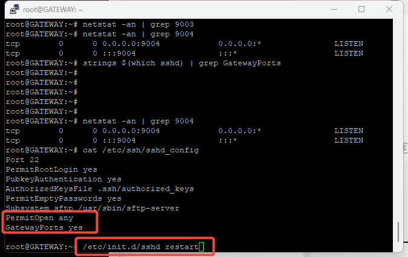
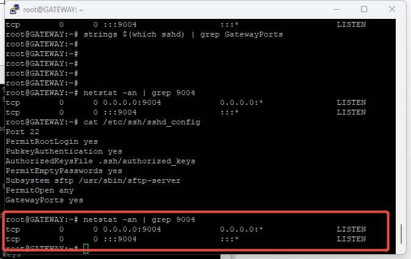
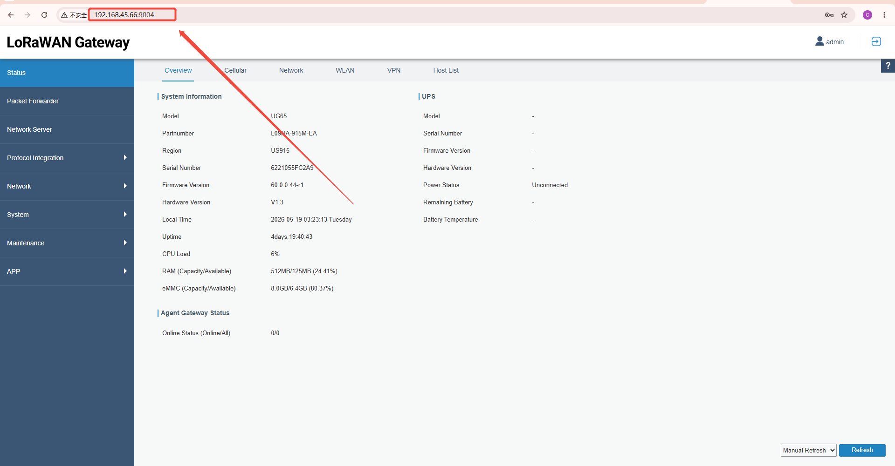
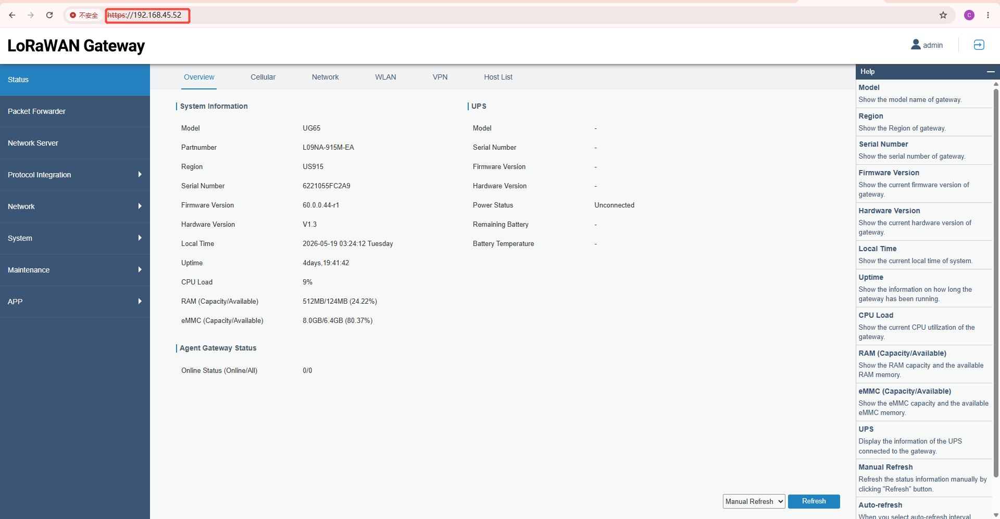

如何使用SSH -R 构建反向隧道访问UG6x网关
SSH -R 构建反向隧道访问UG6x网关
本文将介绍如何通过SSH -R指令实现端口转发，将访问代理服务器某一个端口的流量转发到被访问机器的80端口，从而实现远程访问的功能。这个命令不是 VPN，但它确实实现了“端口转发”或“反向隧道”功能。在某些简单场景下，它可以用来实现类似 VPN 的效果，但它和真正的 VPN（如 OpenVPN、WireGuard、IPSec）有本质区别。
假设：被访问端是192.168.45.52，中间代理端是192.168.45.66，你有一台能访问中间代理端的设备。
①代理端修改配置文件并重启ssh服务

②在被访问端的后台执行：ssh -R 9004:localhost:80 root@192.168.45.66，将代理端的9004端口映射到被访问端的80端口。
之后，确定代理端的9004端口是绑定在所有网卡上。

③确保你的客户端（PC或移动设备）可以访问代理端，这个时候访问代理端的9004端口就是进入了被访问端的80端口（前端页面）。

